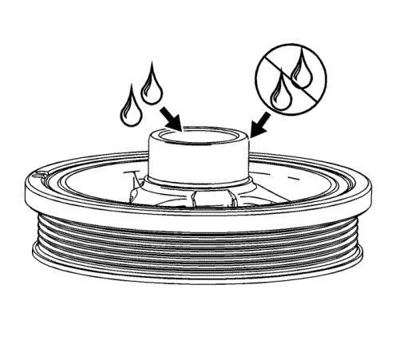
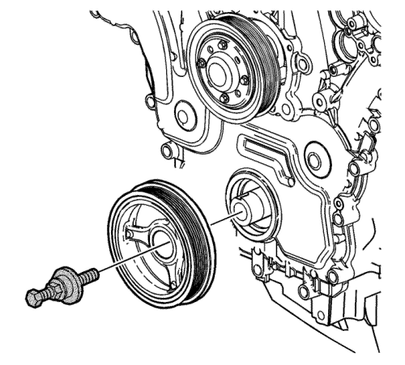

- La herramienta EN-46106 debe instalarse en el volante motor.
- Utilice la herramienta de montaje J-41998-B, una tuerca, un cojinete y una arandela para montar el dámper del cigüeñal.

Nota: No lubrique el retén de aceite delantero del cigüeñal o las superficies de sellado del dispositivo equilibrador del cigüeñal. El dispositivo equilibrador del cigüeñal está instalado en una junta seca.
- Aplique lubricante en la parte interior del orificio del cubo del dámper del cigüeñal.

- Coloque el dámper del cigüeñal en posición en el cigüeñal.
- Enrosque la herramienta de montaje J-41998-B en el cigüeñal. Asegúrese de insertar al menos 10 roscas de la herramienta de montaje J-41998-B antes de embutir el dámper del cigüeñal en su posición.
- Posicione el dámper del cigüeñal apretando la tuerca de la herramienta de montaje J-41998-B hasta que la arandela grande salga por el extremo del cigüeñal.
- Desmonte la herramienta de montaje J-41998-B.
Nota: Monte siempre un tornillo de retención nuevo del dispositivo equilibrador del cigüeñal y una arandela.
- Monte el tornillo NUEVO del dámper del cigüeñal.
Precaución: Consulte Precaución con las fijaciones en la sección Prólogo
- Apriete el tornillo de dámper del cigüeñal.
| • | Apriete el tornillo del dámper del cigüeñal a 100 N·m (74 lib. pie). |
| • | Apriete el tornillo del dámper del cigüeñal otros 150 grados utilizando el medidor J-45059. |
- Monte la pantalla antisalpicaduras. Consultar Sustitución del protector del motor contra salpicaduras .
- Desmonte la herramienta EN-46106.
- Instale el motor de arranque. Consultar Sustitución del motor de arranque : LNQ → LF1 → LE5 .
- Utilizando el dispositivo de soporte del motor, elévelo hasta su posición.
- Monte la correa de accionamiento. Consultar Sustitución de la correa de accionamiento .